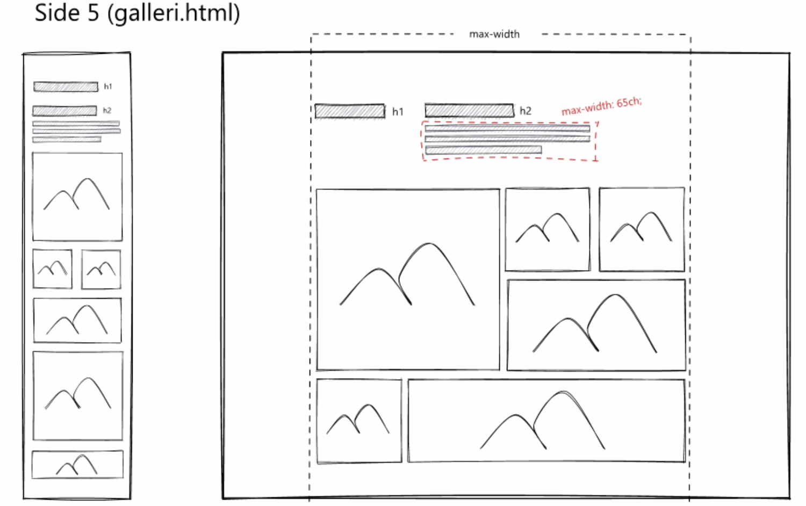
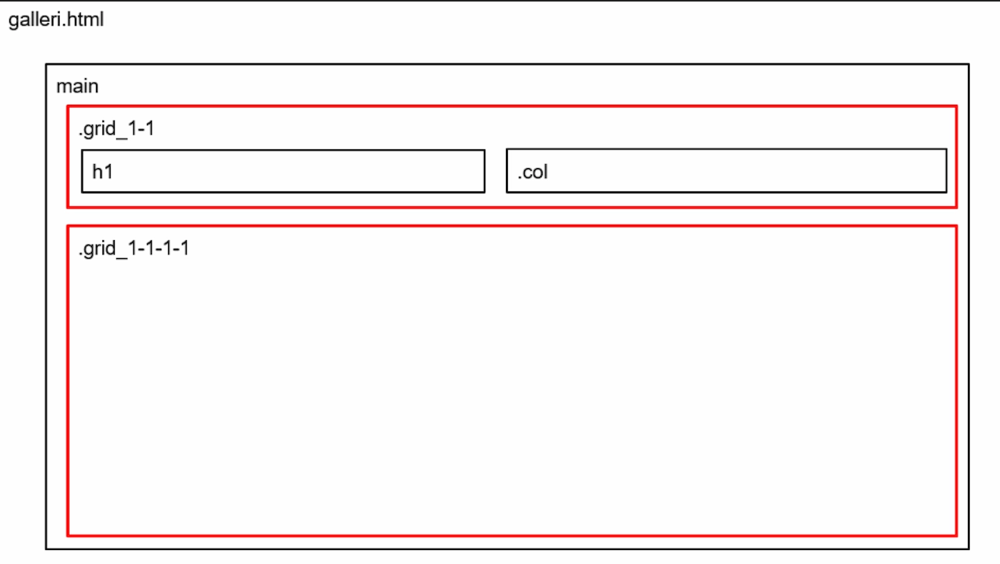
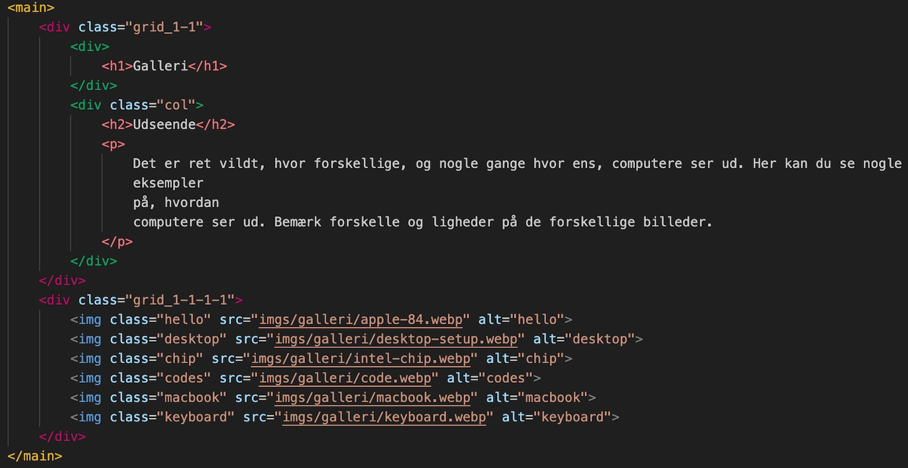
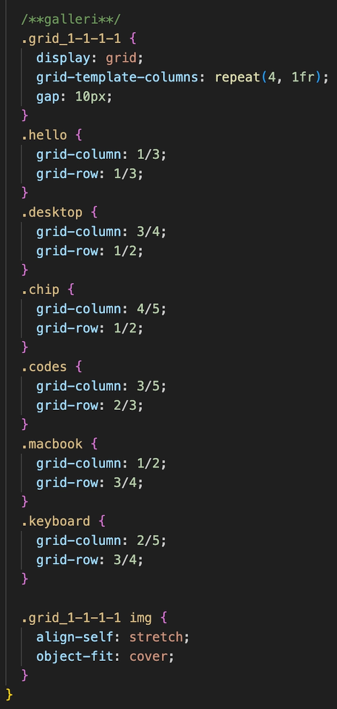
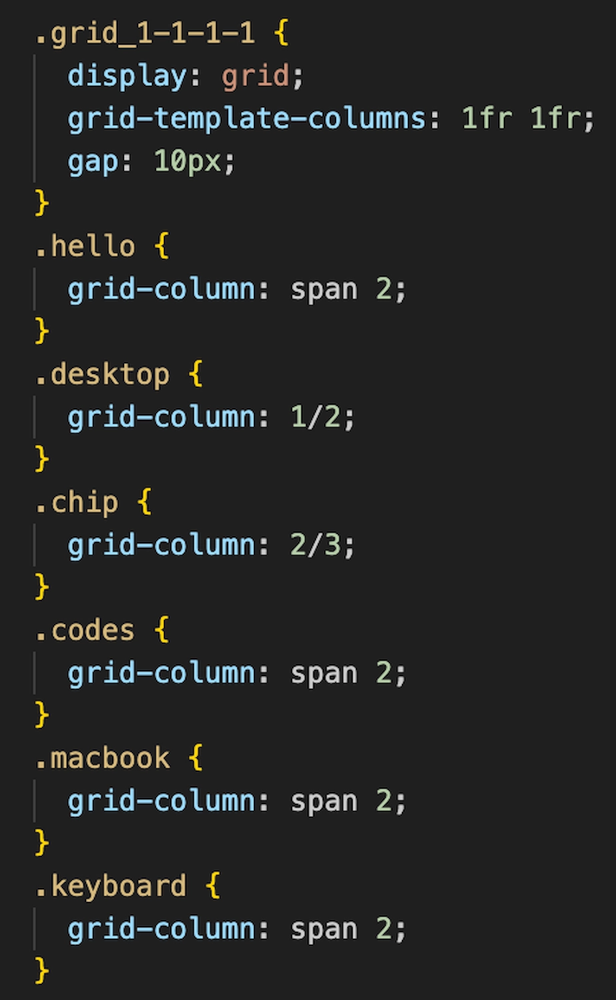

T2 - GRUNDLÆGGENDE WEB
Beskrivelse af tema
I dette tema lærte vi om de grundlæggende principper og metoder til design af brugergrænseflader. Temaet udgør fundamentet for uddannelsen. Vi blev introduceret til HTML, CSS, grid og flex, samt forskellige filformater, designkonventioner, gestaltprincipper og relevante juridiske aspekter for praksis som multimediedesigner.
Beskrivelse af opgave
I opgaven fik vi uddelt indhold, wireframes og layoutdiagrammer med instruktioner om at kode et færdigdesignet website. Vi skulle implementere sitet i HTML og CSS og anvende grid og flex for at sikre responsivitet. Derudover blev vi introduceret til navigationsmenuer og hover-effekter.
Billederne viser de udleverede wireframes og layoutdiagrammer for et udvalgt site, samt min løsning i HTML.
Illustrationer fra Galleri site
Wireframes
Layoutdiagram
HTML
Her viser jeg, hvordan jeg har stylet galleriet i CSS til både desktop- og mobilversion:
CSS, Desktop
CSS, Mobile

Den største udfordring i dette tema var at få et overblik over strukturen for at forstå, hvordan elementerne hænger sammen.
Senere har jeg hentet inspiration fra gallerikoden til mit passionsite (T5), blandt andet for at få billederne til at flugte som illustreret nederst på CSS Desktop.
Beskrivelse af metode
I denne opgave blev vi introduceret til HTML- og CSS-validering, hvilket gav os mulighed for at rette eventuelle fejl i koden.
Klik på knappen for at komme til opgaven: